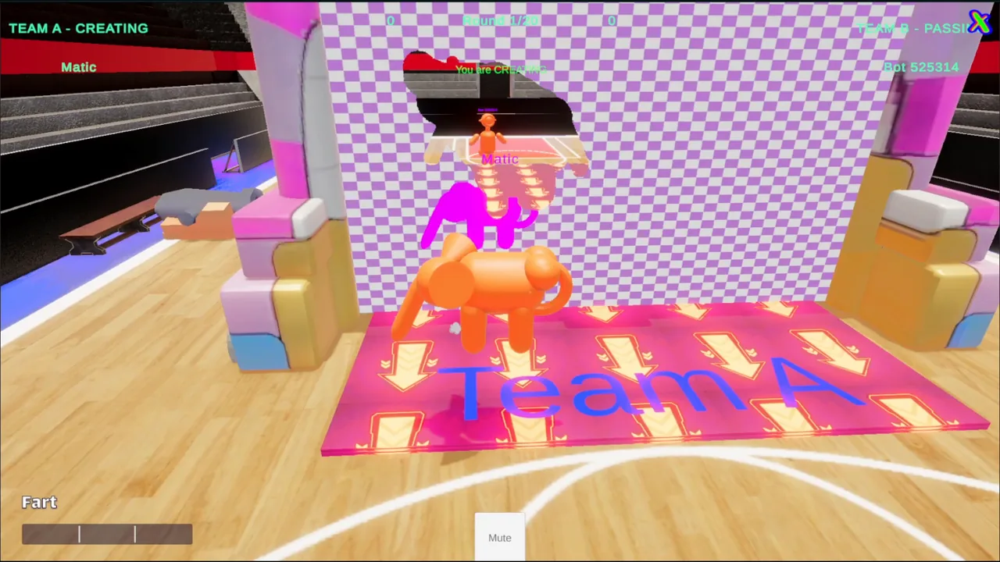
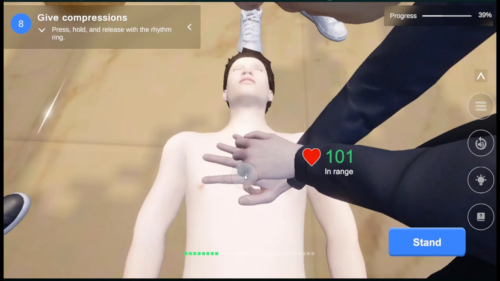
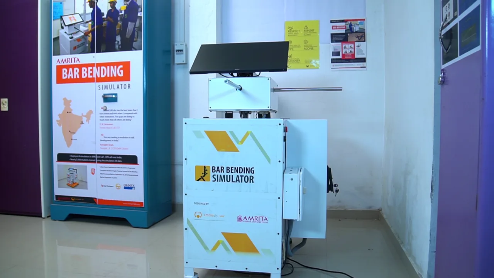
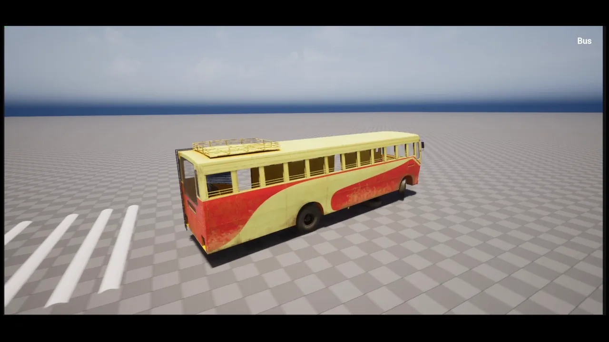
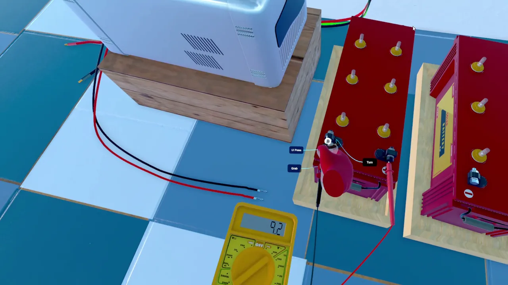

Programming view
Systems, architecture and integration
The same five projects, ordered for engineering readers. Each summary points to the part of the case study with the most technical depth.
Also available: Design view
-

Move Your Butt
Round authority on one networked object, a shared 512×512 wall mask used for visuals, collision and scoring, a four-step pickup protocol, and bots that plan poses by predicting which wall cells they will carve.
-

CPR Training Simulation
Every learner action becomes an event in one log. Guided progression, the 100-point debrief and practice coaching are separate readers of that log, so the scoring logic is pure, deterministic and covered by editor tests.
-

Bar Bending Simulator
Legacy-engine migration and maintenance of a hardware-linked simulator: a named-pipe protocol to the rig's controller, a procedurally bent bar mesh, angle-table evaluation, SQLite persistence and PDF and graph reporting.
-

Madan: The Hope
A hybrid C++/Blueprint structure: C++ owns the character, the interaction trace and interactable base classes, HUD routing and a data-driven mission subsystem; Blueprints wire input, the bus and the door that switches possession.
-

Rooftop Solar Connection Simulator
A visual-scripting step graph extended with custom await nodes and a string event bus, a snap system for connectors and cables, spline-driven wires that bake to static meshes when still, and instruments that check polarity and source before showing a reading.